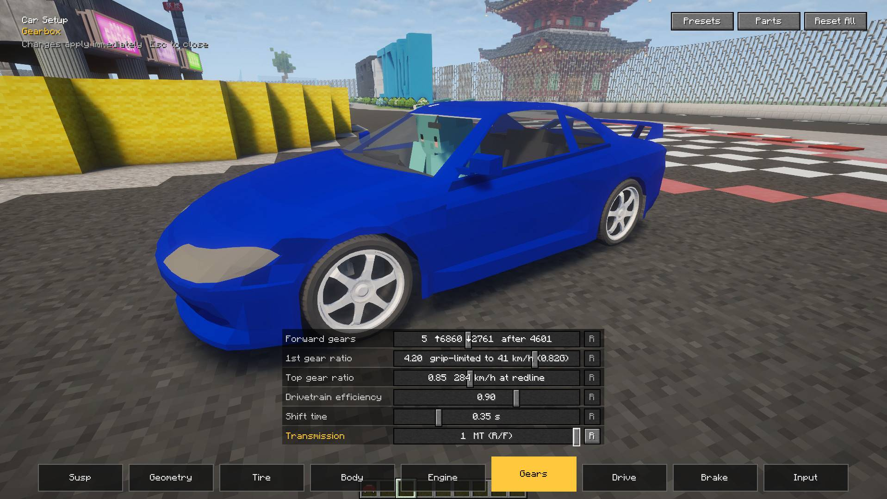

Features
Suspension compresses, weight shifts, tyres slide. KurumaMod works all of it out 80 times a second.サスペンションが縮み、荷重が移り、タイヤが滑る。KurumaMod はそのすべてを毎秒 80 回計算しています。
Suspension compresses, weight shifts, tyres slide. KurumaMod works all of it out 80 times a second.サスペンションが縮み、荷重が移り、タイヤが滑る。KurumaMod はそのすべてを毎秒 80 回計算しています。
You can't throw it into a tight corner at full speed. Brake before the turn, scrub off the speed, and it goes round cleanly. Grip fades gradually, so you feel the front start to run wide.スピードを出したまま急なカーブに飛び込んでも曲がりきれません。手前でブレーキを踏んで速度を落とせば、きれいに曲がれます。グリップは少しずつ抜けるので、フロントが外へ逃げ始めればそれが分かります。
The steering limit is measured from where the front wheels are actually going, so when the rear steps out you have the lock to catch it. Pull the handbrake and the clutch drops for you: the rear locks and the car swings round.切れ角の上限は、前輪が実際に進んでいる向きから測ります。リアが出て車が横を向いても、そのぶんハンドルが切れるのでカウンターで拾えます。サイドブレーキを引けばクラッチが自動で切れ、後輪がロックして向きを変えます。

Press G and the setup screen opens without pausing the game. Springs, anti-roll bars, tyres, torque curve, gear ratios, LSD, brakes, weight distribution and downforce: move a slider and the car changes from the next corner. Start from the Drift or Off-road preset, and save your own setups to share with friends.G を押すと、ゲームを止めずにセッティング画面が開きます。バネ、スタビ、タイヤ、トルクカーブ、ギア比、LSD、ブレーキ、重量配分、ダウンフォース。スライダーを動かせば、次のコーナーから挙動が変わります。ドリフト／オフロードのプリセットから始めて、自分のセッティングを保存して友達と共有できます。

Switch the headlights on and they really light the road: a low beam with a proper cut-off, beams glowing in fog and rain, and shadows cast by trees and walls. Drift through your own tyre smoke and it lights up in the beam. Every car's lights work, and they work with shader packs (Iris / Oculus) too. Tune the aim, brightness and reach with Ctrl+L.ヘッドライトを点けると、本当に路面が照らされます。カットオフの付いたロービーム、霧や雨の中に浮かぶ光の筋、木や塀が落とす影。ドリフトの煙も光を受けて浮かび上がります。全車のライトが路面を照らし、シェーダーパック（Iris / Oculus）とも一緒に使えます。光軸・明るさ・届く距離は Ctrl+L で調整できます。

Tarmac, dirt, gravel, sand, snow, ice. Rain makes the road slippery, while tunnels and bridges stay dry. Roads from other mods work as they are.舗装・土・砂利・砂・雪・氷。雨が降れば滑りやすくなり、トンネルや橋の下は乾いたまま。他 MOD の道路ブロックの上でも、そのまま走れます。

| Surface路面 | Gripグリップ | 0-100 km/h | Braking from 72 km/h72km/h からの制動距離 |
|---|---|---|---|
| Tarmac舗装 | 1.00 | 5.34 s | 19.2 m |
| Dirt, grass土・草 | 0.75 | 5.89 s | 23.4 m |
| Gravel砂利 | 0.65 | 6.03 s | 27.1 m |
| Sand砂 | 0.55 | 7.24 s | 28.1 m |
| Snow雪 | 0.45 | 7.45 s | 36.0 m |
| Ice氷 | 0.15 | 21.11 s | 112.1 m |
Measured with the mod's reference car (AWD, 350 N·m).MOD の基準車（4WD・350N·m）で測った値です。
Set camber, offset and wheel width until it sits just right: flush, poke, or full oni-kyan. Bolt on bumpers, side skirts, fenders, a rear wing and a diffuser. Wings and diffusers make real downforce. Mufflers change the exhaust note, and everyone nearby hears it. Gauges come in 90s JDM factory or modern style.キャンバー・オフセット・ホイールの太さで、好きな姿に。ツライチも、ハミタイも、鬼キャンも。バンパー、サイドスカート、フェンダー、リアウイング、ディフューザーも付けられ、ウイングとディフューザーは本当にダウンフォースを生みます。マフラーで排気音が変わり、周りの人にも同じ音で聞こえます。メーターは 90 年代の国産純正風とモダンの 2 種類。

Place a start line and checkpoints anywhere in your world and hold a proper race: start lights, live standings, and your gap to your best lap at every checkpoint. Multiplayer, timed to the millisecond. Cars can collide with each other, and servers can turn that off.ワールドのどこにでもスタートラインとチェックポイントを置いて、本格的なレースを開けます。スタートシグナル、リアルタイムの順位、チェックポイントごとのベストラップとの差。マルチプレイ対応、計測はミリ秒単位。車同士の接触もあります（サーバー側で切れます）。

Load the Off-road preset for four-wheel drive, a locking diff, long suspension travel and big tyres. Climb one-block ledges, let the diff pull you out of a ditch with a wheel in the air, and head into the hills with dust trailing behind you.オフロードプリセットを読み込めば、四駆・ロックするデフ・長いストローク・大径タイヤの仕様に。1 ブロックの段差をよじ登り、片輪が浮いた溝もデフの力で抜け出して、土煙を上げながら山へ。

Throttle, brake, steering and handbrake are all fully analog. Plug in a controller, press J, and move the axis you want to assign. Every key can be changed in Options → Controls.アクセル・ブレーキ・ステアリング・サイドブレーキはすべてアナログ対応。つないで J を押し、割り当てたい軸を動かすだけ。キーはすべて「設定 → 操作設定」で変更できます。